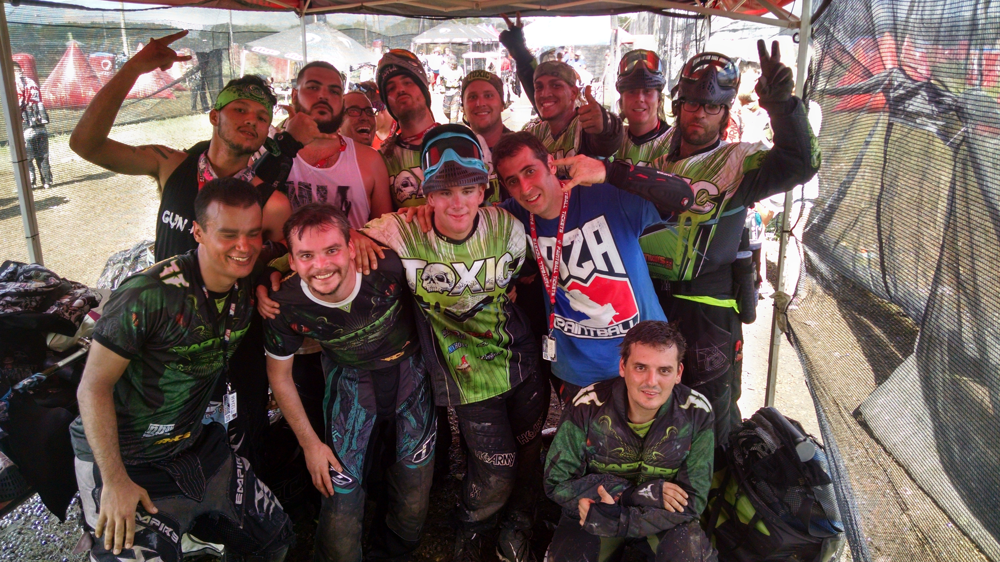
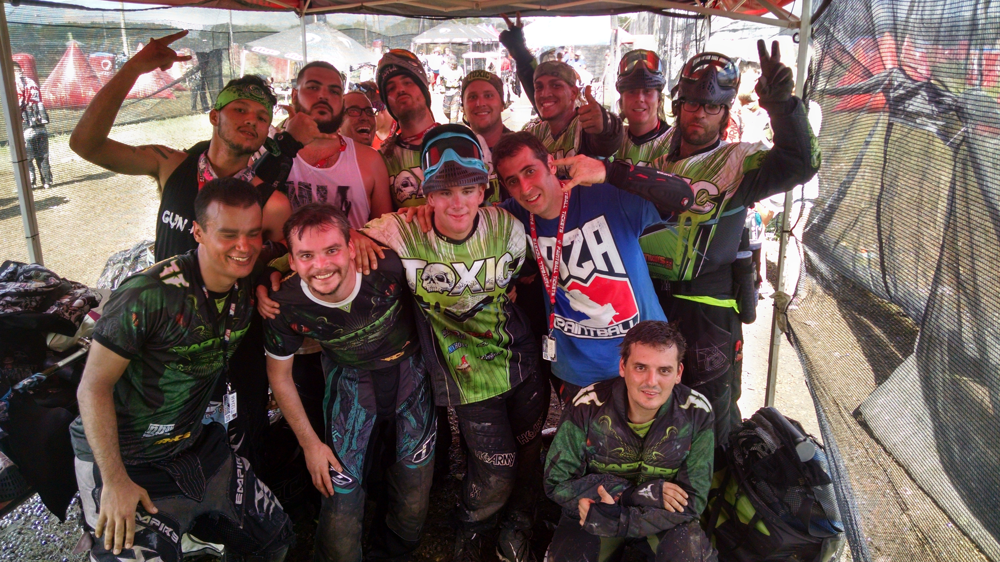

O RAPTORS PAINTBALL TEAM é uma equipe de paintball criada no final de 2008. Original de Minas Gerais já disputou campeonatos Mineiro, Brasileiro, Sul-Americano e Mundial. Especializada nas modalidades de Speed e Cenário.
A equipe representa Minas Gerais desde então e já estivemos nos principais campeonatos de Speed do Brasil e do Mundo. Disputamos o CBP (Circuito Brasileiro de Paintball), CBX (Campeonato Brasilero de XBall), CSP (Circuito Sul Americano de Paintball), WC-NXL (Wolrd Cup), CMP (Campeonato Mineiro de Paintball) e BXL(Brazilian X-Ball League). A partir de 2016 com a entrada de novos jogadores começou a disputar campenatos da modalidade cenário.
Com base na experiência de disputa de campeonatos, formação de equipes, treinamentos foi criado o Centro de Treinamento - Raptors TEAM. Com a criação do centro de treinamento o espaço começou a ser utilizado comercialmente para jogos de paintball onde os clientes poderão utilizar marcadores e máscara de competição e contar com arbitragem especializada.
 
